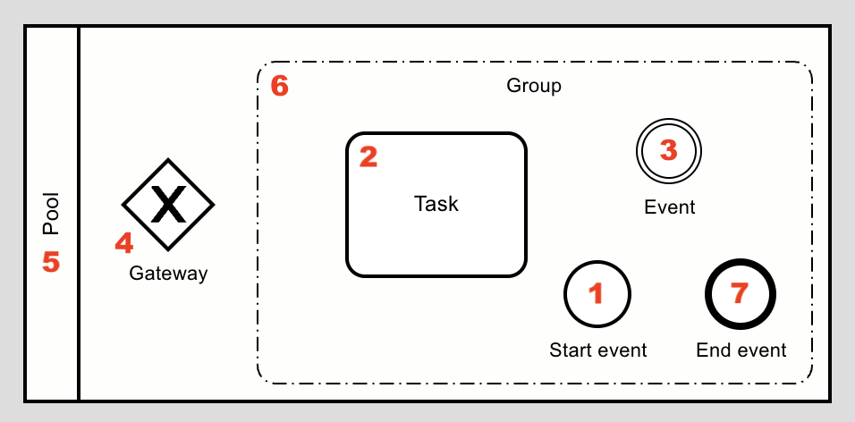
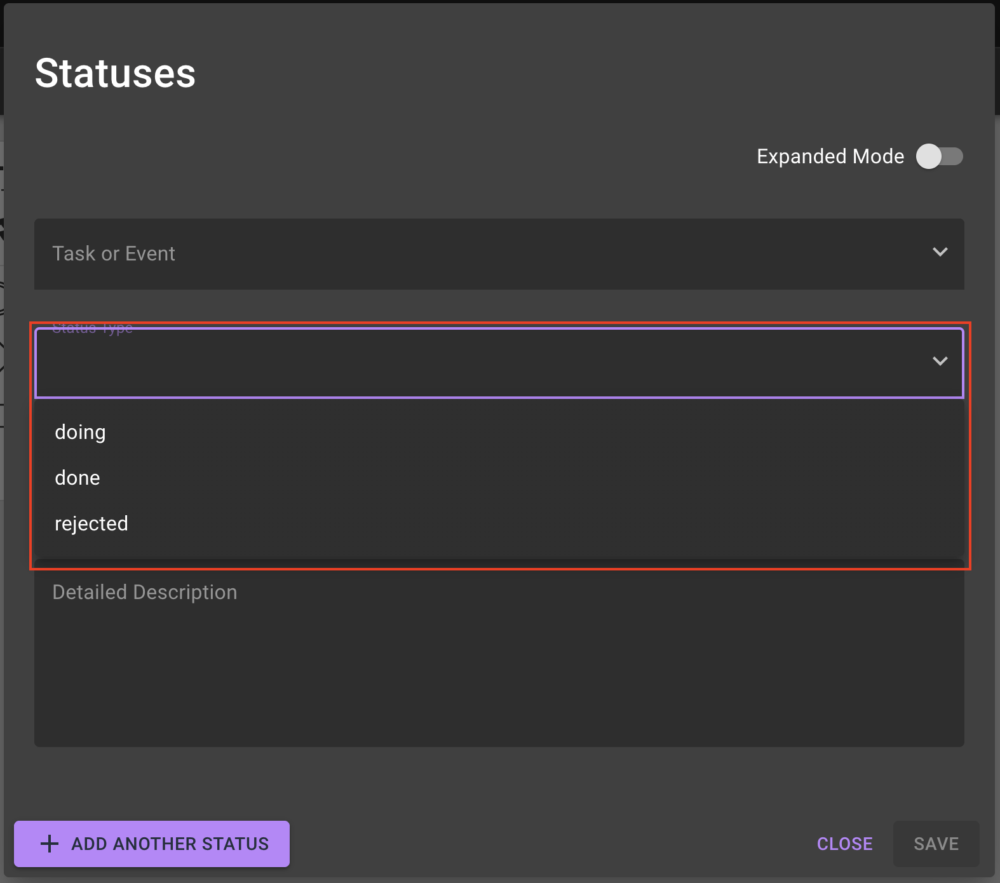
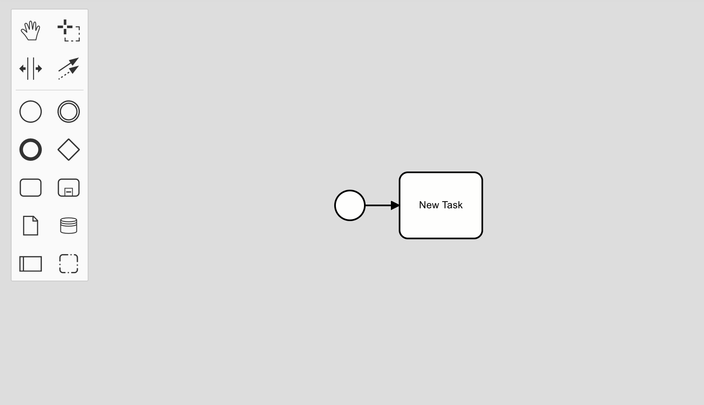
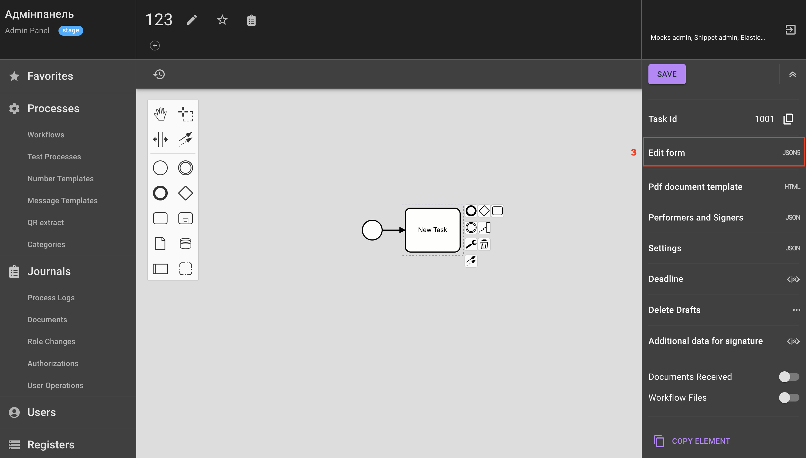
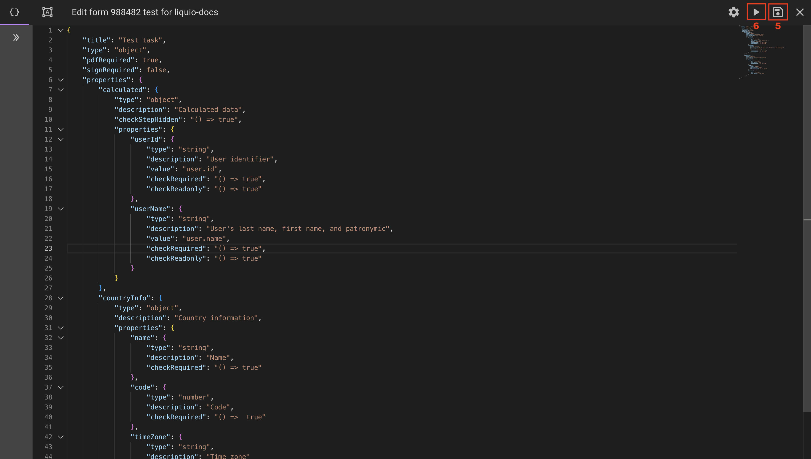
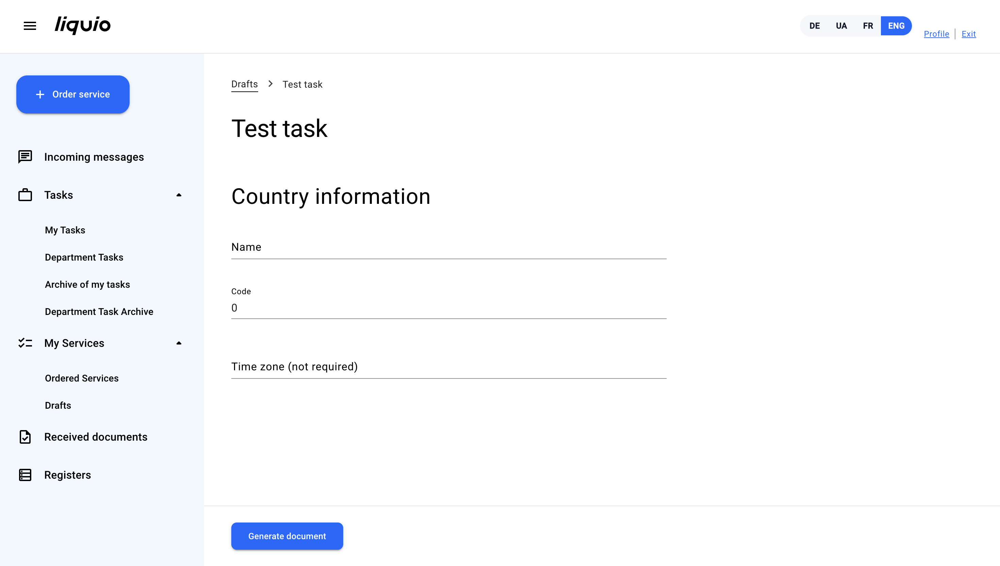

How to configure a process?
Prerequisites
Before starting configuration, create a process and start configuration in the Process Editor.
To navigate to the Process Editor, click on the selected process from the list in the BPMN and forms section.
Process Elements
The process diagram is configured using the main elements of BPMN notation:
1) Start Event — this is the starting point of a process. It does not perform functional actions and is used exclusively to mark the moment when a process starts. All processes begin with a start event.
2) Task — a fundamental element where the primary data processing activities are performed.
3) Event — an element that marks a specific one-time event within a process, for example: notifying a user, delay, registry request, trigger to launch another process, etc.
Most commonly used event types
| Event Type | Description |
|---|---|
| Notification | Used to send messages to users. Usage examples: • informing about application acceptance; • notifying about application review result. |
| Delay | Used to set a pause before performing the next actions in the process. Can be applied, in particular: • before sending data to an external system; • before sending a notification to a user. Delay types: • static — set in minutes, hours, days, or weeks; • dynamic — calculated to a specific date or for a specified time period. |
| Request | Used for integration with external systems. Allows: • sending data to external systems; • receiving data or files from external systems. For each event, the request type, method, provider, and transmitted data are set up. |
4) Gateway — an element that controls the branching or merging of the process flow: determines where execution will go next (by condition or in parallel) and how it will merge again.
Gateway types
| Gateway type | Description |
|---|---|
| Exclusive | Used to select one of the possible process execution paths based on conditions. Used for: selecting one option from several. • Only one outgoing flow can be executed at any given moment of time. • Path selection depends on the specified conditions. When to use: if the process can proceed along only one scenario. |
| Parallel | Used for simultaneous execution of several process branches with the possibility of their subsequent merging. Used for: simultaneous launch of multiple flows. • All outgoing branches are executed in parallel. • When merging, the process continues only after all parallel flows are completed. A parallel gateway can be open or closed: • If it is open, the flow splits into several branches that are executed independently of each other. • If it is closed, the flow also splits into several independent branches, but at the closing point, all branches merge into one flow, and the process continues only after all parallel flows are completed. |
5) Pool — an element that defines the general boundaries of a process. Within one process, one pool is used, which covers the entire process and is divided into lanes to display responsibility. Lane is a part of the pool that defines the role (unit) responsible for executing process elements.
6) Group — a visual grouping of related diagram elements without affecting the process logic.
7) End Event — this is the completion point of a process. It does not perform functional actions and is used to mark the moment when a process ends. All processes end with an end event.

Working with the Process Editor
Editor Tools
1) Hand — a tool that allows you to move the entire diagram or its part in the workspace. Used to view different parts of the process without changing the elements themselves.
2) Create/Remove space — a tool for creating or removing free space between elements on the diagram. Allows easy organization of process flows and avoids overlapping objects.
3) Lasso — a tool for selecting multiple elements at once using a frame. Used for bulk moving, copying, or deleting objects on the diagram.
4) Global connect — a tool that allows quick creation of connections between different process elements. Used to connect tasks, events, and gateways without the need to manually select connection points.

Process configuration
1) Stop process — prohibits execution of processes for all applications, including those already submitted by users. Used for temporary or permanent suspension of process operation.
2) Disable start — prohibits users from starting to order a service. Used to control the launch of new processes without affecting already active ones.
3) Hide in cabinet — hides the process from display in the User Workspace.
4) Access rights — configures access rights in the User Workspace. Allows determining who can order services in the User Workspace.
5) Statuses — intermediate states of a process that can be displayed to the user in the User Workspace so they can see the current state of their application. Status is assigned after the corresponding task or event in the process is completed.
More about statuses
doing— denotes intermediate steps of the process, for example, application processing.done— denotes successful completion of the process, for example, a positive decision on the application.rejected— denotes unsuccessful completion of the process, for example, an error, application rejection, etc.


Task configuration
Task as a key process element
Task — this is a part of the process that generally requires certain actions from the user, in particular, filling out a form. Within the task, sequential steps are defined where the user fills in the necessary information.
To configure a task:
1) Add the Task element to the workspace and connect it to the Event. 
2) To navigate to task settings, click on it.
3) Go to the Form Editing tab, where the main task logic is configured.

4) In form editing mode, add the task code.
Note
JSON format is used to describe the task form. When calculating some parameters, these parameters can be arrow functions that accept document values.
Task code example
5) Save the form.
6) Start the process.
Important
When starting the process, make sure the Stop process switch is turned off.

Starting the process allows filling out the form of the created task in the User Workspace.
